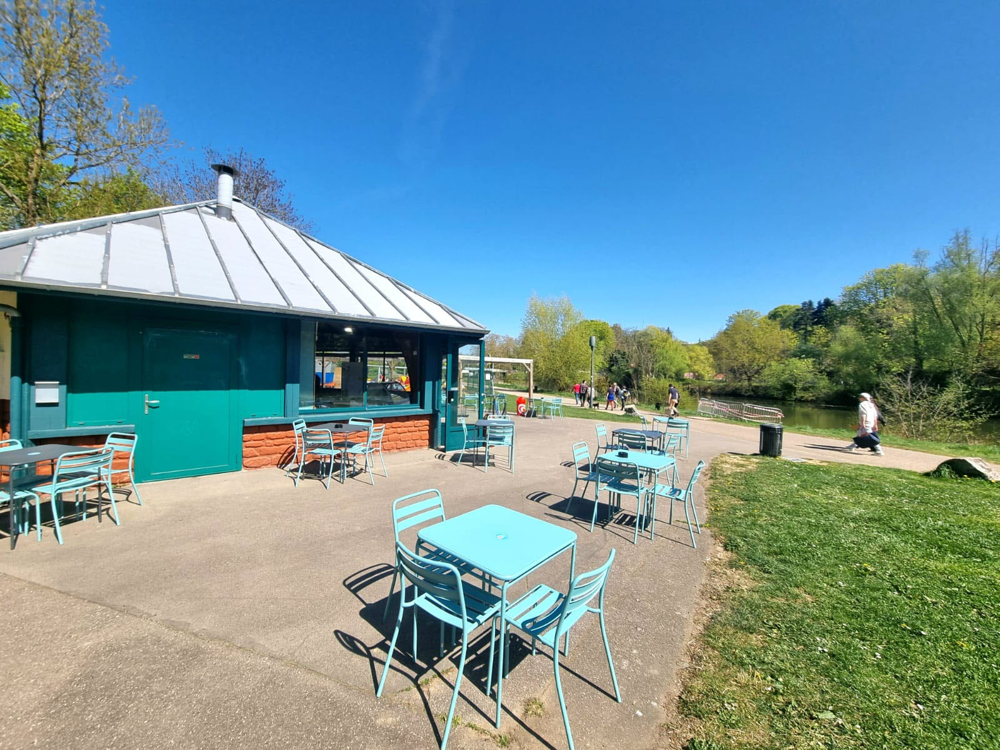

Fraîcheur, sourires et pieds dans l'eau.
— Ce qu'on sert
Des produits frais, locaux et faits avec soin. Parfaits pour une pause au soleil ou une longue soirée estivale sur la terrasse.
— Notre histoire
Avant les années 70, le Plan d'Eau n'était qu'une zone sauvage et inondable. Sous l'impulsion de Raymond Mondon et Jean-Marie Rausch, ce terrain a été transformé en un véritable poumon vert, offrant aux Messins une évasion en plein centre-ville.
Née pour ravitailler les promeneurs et les amateurs de pédalos, notre buvette est vite devenue le QG des familles le dimanche. Située au bord de la flottille, elle incarne depuis ses débuts l'esprit de détente au fil de l'eau.
Avec l'arrivée de Metz Plage dans les années 2000, la Buvette a changé de dimension. Aujourd'hui, elle fait le pont entre le centre historique et le Saulcy. Que vous soyez étudiant, joggeur ou simplement là pour admirer la Cathédrale Saint-Étienne au coucher du soleil, votre table vous attend.
— La terrasse en images
— Quand nous trouver
Venez profiter de la terrasse ombragée et du calme de l'eau. Nos horaires peuvent varier légèrement selon la météo du jour.